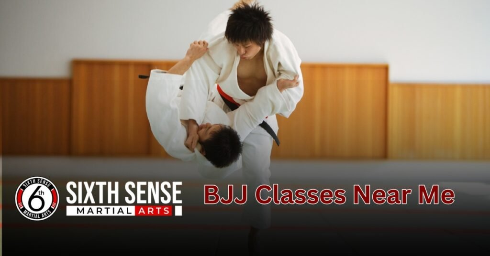
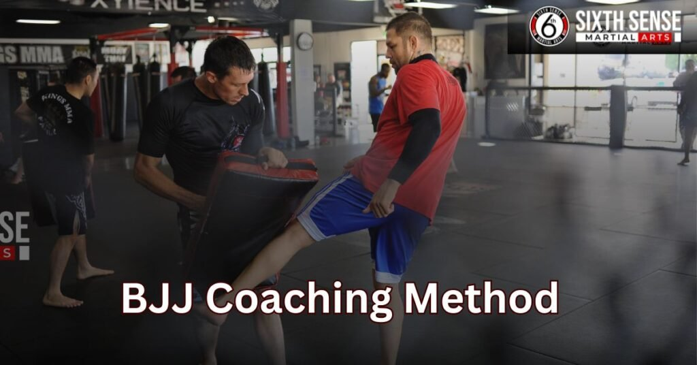

BJJ classes near me that offer flexible memberships

BJJ classes near me that are flexible and truly worth your time are right here at SixthSense MMA. You’ll build real confidence at your own pace in a supportive space. Whether you’re new to Brazilian Jiu-Jitsu or already experienced, our coaches meet you where you are, making sure every session helps you grow stronger and feel more confident.
Even if you’ve taken a break, we welcome you back without pressure our environment is welcoming, focused on fitness, self-defense, and the kind of martial arts training that keeps you coming back. With tools that push you just enough and a vibe that feels like home, you won’t need to travel far to find a gym that actually helps.
It’s not just about the moves everyday classes at SixthSense go beyond drills, building real skill in a way that fits life, not the other way around.
What is BJJ classes ?
BJJ (Brazilian Jiu-Jitsu) classes near me focus on teaching you how to use leverage, technique, and discipline to control or submit an opponent no matter your size or strength. It’s one of the most practical and powerful self-defense systems, designed to help smaller or weaker individuals protect themselves against larger attackers through grappling, holds, joint locks, and choke techniques.
In our SixthSense MMA BJJ program, you’ll learn how to grapple, defend, and even compete, all while building core strength, improving fitness, and gaining real-world confidence. The sport is widely respected in mixed martial arts (MMA) and self-defense communities because it works in real-life combat situations, not just in theory.
Whether your goal is to get fit, learn how to defend yourself, or train for competition, BJJ teaches you how to stay calm, focused, and in control on the mat and in life.
Looking for BJJ classes Near Me? SixthSense MMA Has You Covered
If you’re searching for BJJ classes that fit your life, schedule, and comfort level, SixthSense MMA is the gym that brings it all together. From high-level coaching and structured training to a supportive, no-pressure environment, this is the place where you can truly try and grow no matter your experience, fitness level, or background.
With flexible plans, a clean, safe space, and programs built for everyone, it’s easy to see why more locals choose SixthSense to start or continue their martial arts journey.
Local, Safe & Clean Environment Built for Real Training
Our well equipped, clean, and locally based facility creates a comfortable, focused atmosphere where real training happens daily. Whether you’re walking in for your first class or prepping for competition, you’ll find a safe, respectful space that supports serious work without needing to travel far.
There’s room for beginners, students, and experienced athletes alike to feel fit, complete, and respected inside and outside the mats.
Female Friendly, Kid Friendly, Beginner Friendly
SixthSense MMA is built with everyone in mind. Women, kids, and total beginners are not just accepted they’re welcomed, encouraged, and trained with respect. No experience? No problem. Our coaches work with you, at your level, helping you build skills and confidence at a pace that fits your comfort.
Accessible Timings, Flexible Plans, and Trial Sessions
Life gets busy and we get that. That’s why we offer accessible timings, flexible plans, and trial sessions so you can try BJJ the way that works best for you. Whether your schedule is packed or you’re just not sure yet, there’s no pressure just a chance to see if BJJ fits your fitness and lifestyle goals.
What Are MMA and BJJ Gyms All About?
MMA and Brazilian Jiu-Jitsu (BJJ) gyms like SixthSense offer a safe, structured, and powerful way to boost your fitness, confidence, and self-defense skills. These gyms are designed for all ages and backgrounds whether you’re an adult, teen, or child to learn something new, challenge your body, and stay injury-free while working toward your goals.
From striking-based styles like kickboxing and boxing to ground-focused Jiu-Jitsu, each class helps you improve, gain control, and develop better coordination, stamina, and balance in a clean, professional setting.
BJJ vs. MMA Which One Fits You Better?
| Feature | BJJ (Brazilian Jiu-Jitsu) | MMA (Mixed Martial Arts) |
|---|---|---|
| Focus | Calm, strategic, ground-based techniques | Fast-paced, intense, combines striking & grappling |
| Primary Techniques | Submissions, holds, control | Punching, kicking, takedowns, striking |
| Training Style | Low impact, safe, technical | High impact, full-body conditioning |
| Best For | Those who prefer control and defense | Those seeking a challenge and explosive movement |
| Workout Type | Gentle, focused on flexibility and technique | High-energy, includes boxing, kickboxing, etc. |
| Injury Risk | Lower due to no striking | Higher due to striking-based elements |
| Suitable For | All ages, beginners, women, recovery phase | Adults looking to compete, boost fitness |
Why BJJ Is Ideal for All Ages and Fitness Levels
Brazilian Jiu-Jitsu is a gentle, safe, and beginner-friendly martial art that helps people of all ages from kids to adults build strength, flexibility, and confidence at their own pace. There’s no need to be super fit to begin, and even those who are unsure or recovering from injuries can find their flow in BJJ.
It’s also an excellent way for women, beginners, and those just starting their fitness journey to feel comfortable, encouraged, and respected while improving their overall health.
How a Professional Gym Setup Boosts Your Learning
A clean, safe, and certified gym like SixthSense makes a real difference in your training. From one-on-one coaching to well-maintained mats, every part of the setup is designed to prevent injuries, support learning, and keep you coming back.
With structured classes, experienced coaches, and the right tools in place, you’ll find it’s easier to stay consistent, recover faster, and reach your fitness goals whether you’re a beginner or working at an advanced level.
Real Benefits of Searching for “BJJ Classes Near Me”
When you search for BJJ classes near me, you’re not just looking for convenience you’re opening the door to real personal growth. Whether you want to get in shape, learn self-defense, or find a healthy routine that fits your schedule, local BJJ training helps you stay consistent, disciplined, and stronger over time.
Gyms like SixthSense offer a supportive, respectful space where every class is designed to help you improve your body, mindset, and confidence no matter your fitness level or background.
Learn Self-Defense That Works in Real Life
BJJ teaches you how to defend yourself using smart, efficient techniques that work in real-world situations. Instead of relying on size or strength, you’ll use leverage, submissions, and body control to stay safe even when under pressure. It’s one of the few martial arts that gives you the tools to hold your own without punching or kicking.
Build Strength, Stamina, and Discipline
Each training session works your full-body, helping you build real strength, boost your stamina, and sharpen your discipline. Over time, BJJ helps you feel more balanced, focused, and confident on and off the mats. It’s a high-impact workout that builds both your body and your mind.
Stay Consistent with a Local Class
Having a local BJJ class makes it easier to stick with your goals. No long trip, no complicated scheduling just a nearby solution that keeps you in a solid routine. It’s one of the best ways to stay fit, avoid burnout, and actually enjoy your progress.
Train in a Supportive, Skill-Focused Community
At places like SixthSense, the coaches and teammates create a supportive community that values progress over ego. You’ll meet people who want to see you grow, and the training is built around respect, proper guidance, and long-term improvement not showmanship.
Suits All Fitness Levels and Backgrounds
You don’t need to be in top shape to start. BJJ is designed for all fitness levels, from total beginners to those returning after a break. Whether you’ve never tried a martial art or you’re coming in with some background, BJJ fits your pace and helps you learn, improve, and feel better every time you train.
Why Choose SixthSense MMA for BJ Classes Near You
Choosing SixthSense MMA means choosing a place that’s truly built for you. Whether you’re a beginner or already have some BJJ or MMA experience, our gym is focused on real growth physically and mentally. Every class is part of a complete, well structured program designed to help you build confidence, learn self-defense, and develop strong habits for life.
With a supportive environment, patient coaches, and personalized guidance, SixthSense isn’t just another fitness stop it’s where real progress begins.
Our Unique Coaching Method Focused, Respectful, Real
Our coaching is centered on respect, real-world techniques, and understanding how you learn best. We don’t rush students through flashy moves; instead, we take the step by step approach that allows you to train at your own pace.

Our coaches offer personal, hands-on instruction, helping you build a strong foundation and feel supported through every stage of your training. This method creates stronger students who truly understand what they’re doing and why.
Small Class Sizes, Big Impact: One on One Attention
Unlike overcrowded gyms, we keep our class sizes small so each student gets the attention they deserve. Whether you’re working on a new technique or asking specific questions, our coaches are always available for one-on-one help.
This setup makes your learning faster, more focused, and tailored to your goals. It’s a simple formula: fewer people in class, more support for you.
Learn Self-Defense, Build Strength, and Grow Confidence
At SixthSense, you’ll train with a purpose to protect yourself, to get stronger, and to gain confidence that extends far beyond the gym. Our real, practical self-defense training helps you stay prepared for anything while improving your fitness, discipline, and mental focus.
Whether your goal is to get in shape, feel safer, or simply learn something new, this is the right place to grow stronger every week.
Real Reviews from Our BJJ Students Across the USA
Our students are the heart of SixthSense MMA. From coast to coast, people who once searched for “BJJ classes near me” are now part of a community that supports, teaches, and grows together. Here’s what some of them have to say about their experience with us:
“I felt empowered from day one!” – Lisa M., NYC
“But the energy, the coaches, and the way they made me feel safe changed everything. I felt empowered from day one. Every move they teach is explained clearly, and there’s always someone to help. SixthSense MMA gave me more than a workout it gave me confidence.”
“They take time to teach, not just drill.” – Marcus R., LA
“I’ve been to other gyms where they rush through techniques. Here, it’s different. The coaches at SixthSense MMA actually take time to teach. They want you to understand what you’re doing and why it matters. That approach helped me level up faster and made training way more meaningful.”
“Perfect for beginners like me.” – Sara K., Austin
“I thought I had to be in shape or have experience before starting BJJ. Turns out, I just needed the right gym. SixthSense MMA was so beginner-friendly. The coaches never made me feel behind. Everything was paced, patient, and encouraging. I’m stronger now physically and mentally.”
“My kids train here too it’s a family space.” – David L., Chicago
“I joined for adult BJJ classes, but soon enrolled my two kids as well. SixthSense MMA isn’t just tough it’s family-friendly. The coaches are amazing with kids and still push adults to reach their best. We all feel stronger, safer, and more connected because of this gym.”
“No ego, just support and real progress.” – Nina P., San Diego
“I’ve been to gyms where I felt judged or left behind. SixthSense is nothing like that. The energy here is calm, focused, and respectful.It’s the first place I’ve trained where I actually want to come back every week.”
“Trial class convinced me I signed up right after.” – Josh T., Miami
“ Best decision ever. The coach explained everything clearly, the space was super clean, and people were kind. I knew right away I wanted to train here. Six months later, I’m still going strong.”
“Helped me lose weight and stay focused.” – Amber S., Seattle
“I started BJJ to get in shape, but I didn’t expect how much it would help my mindset. I’ve lost weight, yes but more than that, I’ve learned how to stay calm, focused, and push through challenges.”
Pricing, Trial Classes & Membership Options
At SixthSense MMA, we keep everything upfront and simple so you always know exactly what you’re getting. Whether you’re just starting out in BJJ or looking for a gym that respects your time and budget, our programs, memberships, and sessions are designed to give you full value without the stress of hidden costs or confusing details. From your first class to long-term training, we make it easy to access the right fit for your needs.
Transparent Pricing No Hidden Fees
We believe in honest, clearly laid out pricing with no hidden fees, no fine print, and no extra charges. When you join our gym, you’ll always know what you’re paying for whether it’s group classes, private sessions, or flexible memberships. It’s real value, with no surprises.
Free First Class Come See for Yourself
Not sure if BJJ is for you? No problem. We offer a free trial class so you can try it out without any pressure. Just bring a water bottle, show up with a willingness to learn, and experience what real, supportive training feels like. No strings attached just a chance to see for yourself what makes our gym different.
Membership Perks: Private Coaching, Open Mat, More
When you become a member, you get access to more than just weekly classes. Our memberships include private coaching, open mat sessions, practice time, and invites to events, seminars, and workshops so you can grow at your own pace. Every training option is built to support your personal journey, with flexible schedules and perks that match your commitment.
Book Your Free BJJ Trial Class at SixthSense MMA Today
Looking to start your Brazilian Jiu-Jitsu journey? Book your free trial class today at SixthSense MMA and experience what real, supportive training feels like. Our expert coaches focus on your growth from day one, offering clear guidance and hands-on help that meets you at your level.
You won’t find ego here just real people, real progress, and a clean, welcoming space built for learning. Whether you’re a complete beginner or returning to training, our community is here to support you every step of the way. With a location near you, flexible class times, and a team that truly cares, there’s no better time to get started.
Conclusion
BJJ classes near me aren’t just about fighting they’re about transformation. At SixthSense MMA, we’ve created a space that’s safe, structured, and results-driven. You’ll train with professionals who care about your growth, in classes that are friendly for beginners, kids, and anyone looking to challenge themselves.
With flexible plans, trial sessions, and real reviews from people just like you, we make it easy to get started. So if you’ve been searching for a reason to begin, this is it your journey starts here.
FAQ's
For your first trial class at SixthSense MMA, you don’t need to worry about buying a gi or traditional uniform right away. Most beginners train in comfortable clothes like a t-shirt, leggings, or shorts just to make sure they don’t have zippers that could scratch you or your partner during training. If you don’t have anything suitable, the gym can usually let you borrow what you need for the day, so you can train without stress.
Just wear something that lets you move freely, and you’ll be fine for your first class. It’s all about showing up and giving MMA or BJJ a try in a space that welcomes you from day one, even if you’re starting completely from scratch.
Absolutely not. At SixthSense MMA, we believe BJJ is for all ages, body types, and fitness levels. Whether you’re in your 30s, 40s, or 50s, or even if you’ve never done a day of training, you can still start and make real progress. Our coaches are trained to guide you safely, at your own pace, in a way that respects your limits while helping you build strength and confidence.
You don’t need to be in top shape to begin, just be willing to show up and learn. Many students come in thinking they’re not ready, but soon discover that BJJ actually helps them get in shape, strong, and flexible. Our program is made for you, no matter what your background. It’s not about competing, it’s about becoming stronger, both inside and out.
At SixthSense MMA, we recommend starting with 2 to 3 sessions per week to find the rhythm that works best for you. The goal is to train consistently without feeling overwhelmed. Everyone’s schedule, goals, and starting point are different, so we help you figure out what intensity and frequency will help you build skills, stay comfortable, and make great progress.
What really matters is finding a way to train that fits your lifestyle and keeps you coming back. Whether you’re just starting out or getting more serious, we’ll help you get in the groove so you feel motivated, confident, and on track to reach your goals.
Yes! We welcome women, kids, and all ages in a supportive, safe setting. Our coaches tailor training to ensure everyone feels comfortable and empowered while learning real BJJ skills.
Yes! BJJ is low-impact and focuses on technique over brute force. Our coaches modify drills to accommodate injuries while helping you build strength safely.
Train with us in Coppell
The first class is free. Shorts, a t-shirt and a water bottle. We lend the rest.
Book a free class